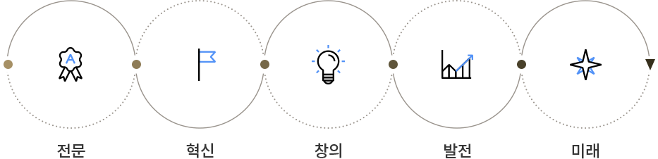

-
병원소개
- 정확한 진단과 근본적인 원인을 치료하는 병원이 되겠습니다.
미션/비전
Vision
‘비가 온 뒤 맑게 갠 하늘’의 뜻을 가진 해밀병원은 드넓고 무궁무진한 가능성을 가지고 변화를 추구하며 발전해 나갑니다. 시대를 앞서가는 해밀병원은 최상의 진료를 실현하여 환자분들과 가족들에게 맑게 갠 하늘과 같은 삶을 누리실 수 있도록 건강증진과 행복에 기여합니다.
Mission

Vision
‘비가 온 뒤 맑게 갠 하늘’의 뜻을 가진 해밀병원은 드넓고 무궁무진한 가능성을 가지고 변화를 추구하며 발전해 나갑니다. 시대를 앞서가는 해밀병원은 최상의 진료를 실현하여 환자분들과 가족들에게 맑게 갠 하늘과 같은 삶을 누리실 수 있도록 건강증진과 행복에 기여합니다.
Mission